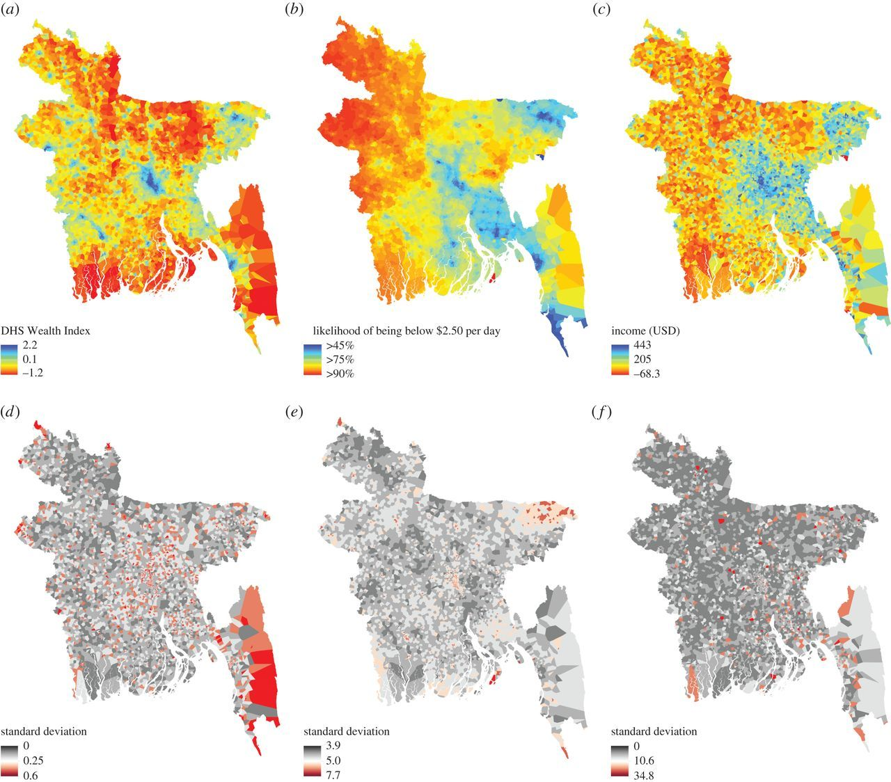

Data Science Can Help Social Scientists
We have several goals in social science. Here are four that data science can help us pursue:
- Describe and measure
- Has the U.S. population increased?
- Explain, evaluate, and recommend
- Does expanding Medicaid improve health outcomes?
- Predict
- Who will win the next election?
- Discover
- How do policies diffuse across states?
What are other examples of these goals?
Example: Mapping poverty using mobile phone and satellite data
Researchers used modern data sources, including mobile phone data, as a way to predict and describe poverty in different geographic regions. These methods helped social scientists come up with methods that are much more cost-effective and efficient, but still as accurate as traditional methods for this type of measurement.
- How might measures of global poverty be useful to political scientists?

Steele et al. 2017: Poverty is one of the most important determinants of adverse health outcomes globally, a major cause of societal instability and one of the largest causes of lost human potential. Traditional approaches to measuring and targeting poverty rely heavily on census data, which in most low- and middle-income countries (LMICs) are unavailable or out-of-date. Alternate measures are needed to complement and update estimates between censuses. This study demonstrates how public and private data sources that are commonly available for LMICs can be used to provide novel insight into the spatial distribution of poverty.
Why take this course?
Note: In this course, we are exploiting the benefits of quantitative data to help achieve goals of social science. However, quantitative data have their shortcomings, too. We will also discuss the limitations of various applications of social science data, and we encourage you to always think critically about how we are using data.